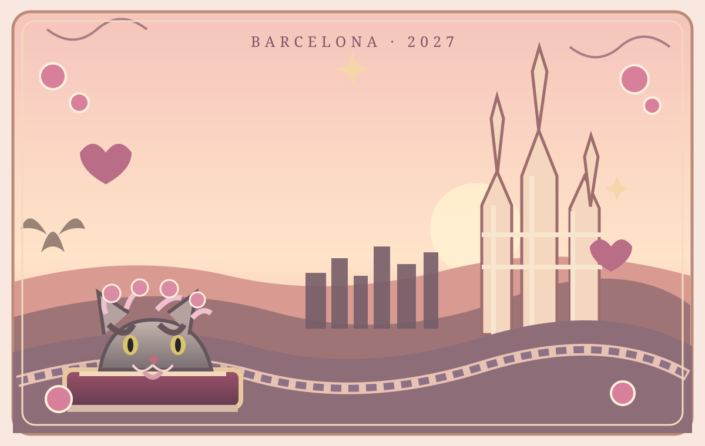

La copia permite pasar tus avances manualmente a otro dispositivo.
ESPACIO PERSONAL
Mi alcancía · Barcelona 2027
Un sueño que va tomando forma.
Registra tus ahorros y consulta cuánto falta para completar tu meta.
Mi progresoMeta de viaje
Mi meta
Registrar movimiento
Mis movimientos
Cargando movimientos…
Preferencias del diario
Configuración
Administra tus datos y conserva una copia de tus avances. El guardado actual funciona en este dispositivo; la sincronización entre dispositivos requiere conectar la base de datos compartida.
Privacidad
El acceso al diario está protegido con contraseña. No compartas la clave con otras personas.
Bienvenida · Antes de comenzar
Una aventura que es solo tuya.
Este pequeño libro es para acompañarte antes, durante y después de Barcelona. Aquí encontrarás lugares por descubrir, historias, páginas libres y algunas palabras que Isaac dejó para ti. Ve a tu ritmo. No hay una forma correcta de vivir un viaje.
Una nota para ti
Que cada calle te regale una sorpresa, que encuentres belleza en los detalles pequeños y que, cuando cierres este diario, tengas un montón de historias que sean solamente tuyas.
Con cariño, Isaac ♡
Índice del diario
Elige por dónde empezar.
Puedes recorrer las páginas en orden o abrir directamente el capítulo que te apetezca.
Capítulo 01 · Preparativos
Antes de abrir la puerta.
Barcelona en febrero suele tener días frescos y posibilidad de lluvia. Lleva capas, calzado cómodo y deja un poco de espacio en la maleta para lo inesperado.
Mi lista de viaje
Marca cada cosa cuando esté lista. El progreso se conserva en este navegador.
0 de 8 listos
Consejo de Bicha: no llenes cada minuto. A veces el mejor recuerdo aparece cuando no estás buscando nada.
Capítulo 02 · Mi presupuesto
Un viaje bonito, sin perder de vista los gastos.
Una referencia para organizar el dinero durante cuatro días. El alojamiento y los vuelos no están incluidos. Como algunas comidas estarán cubiertas por tus anfitriones, el gasto real puede ser menor.
Presupuesto orientativo por persona
Plan sencillo: 220–300 €
Comidas sencillas, transporte público y algunas entradas.
Con más comodidad: 320–480 €
Más visitas, cafés, comidas variadas y algún capricho.
Son estimaciones iniciales, no precios garantizados. Conviene revisar tarifas, reservas y transporte antes del viaje.
Mi pequeño control de gastos
Anota aquí cuánto quieres destinar a cada cosa. Los importes se pueden cambiar.
Total planeado: 0 €
Capítulo 04 · Barcelona histórica
Piedra, luz e historias.
Unas paradas para conocer la ciudad con calma. Consulta horarios y tarifas oficiales antes de ir; los precios pueden cambiar.
Barri Gòtic
Callejuelas medievales, el Pont del Bisbe, la Plaça del Rei y rincones escondidos. Ideal para caminar sin prisa y mirar hacia arriba.
Entrada libre para recorrer las calles.
Santa Maria del Mar y El Born
Una basílica gótica y un barrio lleno de historia, cafés y pequeñas tiendas.
Sagrada Família
Una visita que conviene reservar con antelación en su web oficial: sagradafamilia.org.
Lugares para descubrir
Marca los lugares que visites. Los precios son orientativos; consulta siempre la web oficial antes de desplazarte.
Capítulo 05 · Rincones y descubrimientos
Deja que la ciudad te sorprenda.
No todo tiene que ser una visita famosa. Regálate un rato en una plaza, entra a una librería, descubre una fachada bonita o siéntate a observar la vida pasar.
Una pequeña misión
Encuentra un detalle que casi nadie mire: una puerta antigua, un balcón, una baldosa, una sombra bonita. Guárdalo en tu memoria.
Bicha recomienda: caminar con curiosidad y descansar cuando el cuerpo lo pida.
Capítulo 06 · Cartas para el corazón
Abre una cuando lo necesites.
Estas cartas están pensadas para acompañarte en momentos distintos. Los mensajes personales pueden editarse cuando Isaac los escriba.
Si hoy extrañas tu hogar, respira. Estás viviendo algo nuevo y puedes disfrutarlo sin dejar de extrañar lo que amas. Estoy orgulloso de ti y te llevo conmigo, incluso a la distancia. ♡
No tienes que poder con todo ni aprovechar cada segundo. Descansa, ve despacio y recuerda lo capaz que eres. Un día difícil no arruina una aventura.
Aunque hoy estemos lejos, no estás sola en lo que sientes. Puedes escribirme, llamarme o simplemente tomarte un momento para ti. Te quiero.
Ojalá pudiera escuchar cada detalle de ese día. Guárdalo bien, celébralo y disfruta esa felicidad. Me encanta imaginarte descubriendo cosas nuevas.
No tienes que seguir caminando para que el día valga la pena. Busca un lugar cómodo, toma algo calentito y descansa. Cuidarte también forma parte del viaje.
Qué bonito que algo nuevo te haga brillar los ojos. Disfrútalo muchísimo y, cuando quieras, cuéntame todo. Quiero conocer Barcelona a través de tus historias.
Volver no significa que la aventura termine. Todo lo que descubriste ahora forma parte de ti. Ojalá regreses llena de historias y con ganas de volver a sorprenderte.
La distancia no cambia lo que siento por ti. Este diario es una forma pequeña de acompañarte, de recordarte que pienso en ti y que deseo que vivas algo precioso. Te quiero.
Nota: estos son textos iniciales editables; Isaac podrá personalizarlos con sus propias palabras.
Capítulo 07 · Mis páginas libres
Este espacio es tuyo.
Dibuja algo que viste, garabatea mientras tomas un café o deja aquí una idea. No tiene que quedar perfecto.
El dibujo se descarga como imagen PNG en este dispositivo.
Capítulo 08 · Al volver
La aventura se queda contigo.
Cuando regreses, este libro seguirá aquí para que recuerdes lo que te hizo sonreír, lo que aprendiste y los pequeños momentos que hicieron especial el viaje.
Una última página
No importa cuántas ciudades conozcas: ojalá nunca pierdas esa parte de ti que se emociona al descubrir algo nuevo.
Con todo mi cariño, Isaac ♡